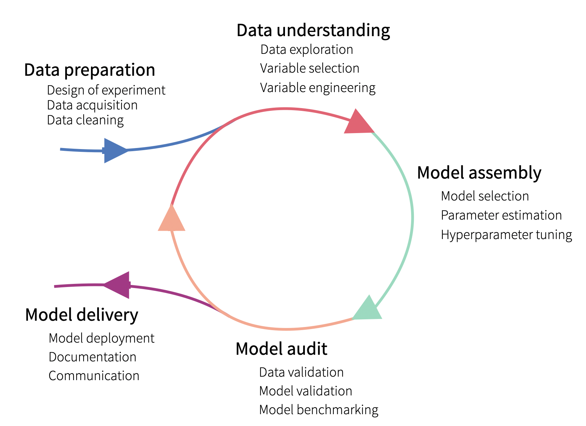
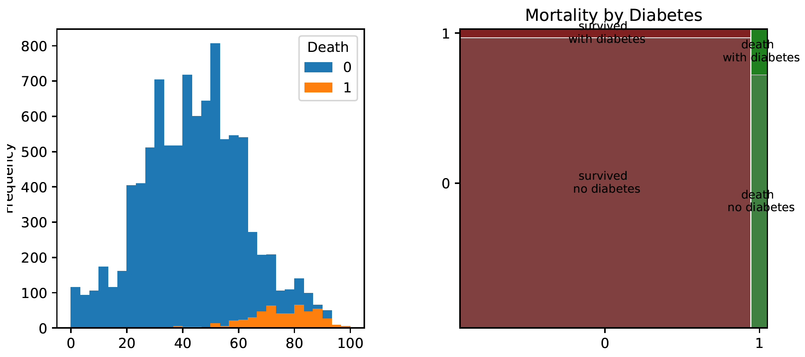
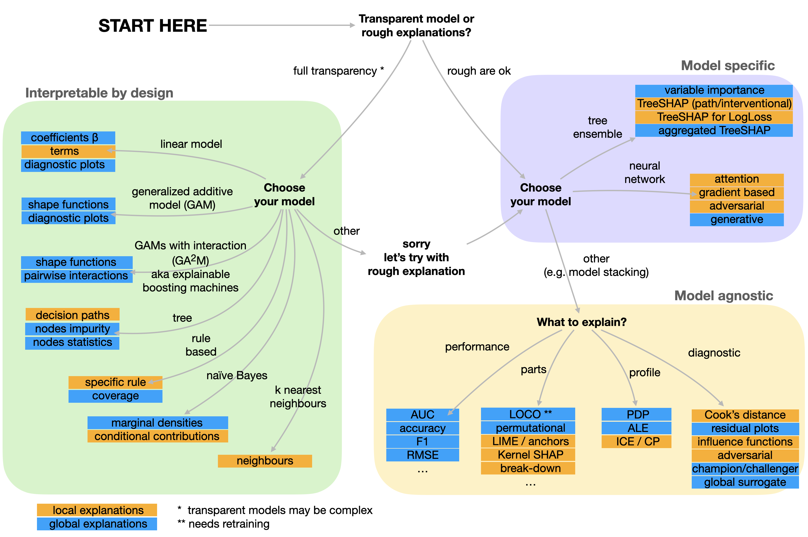
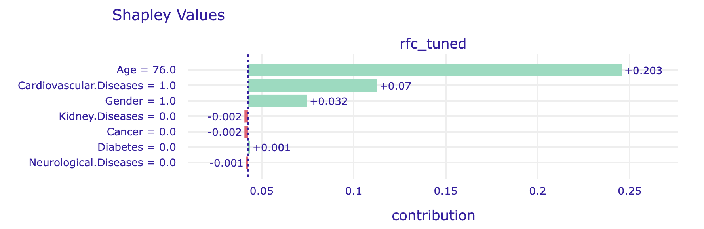
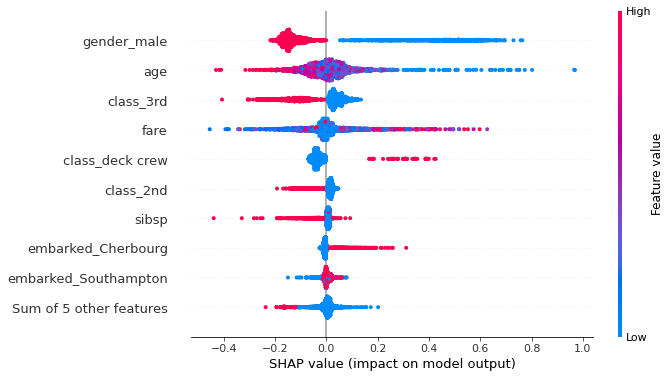
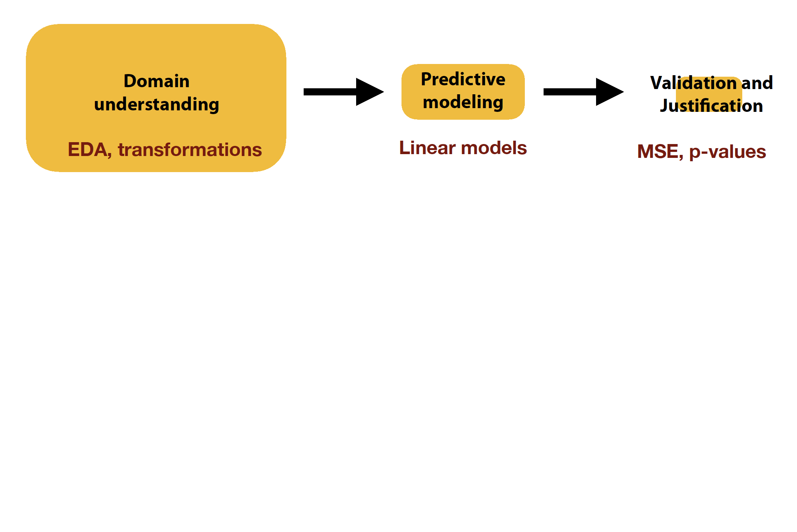
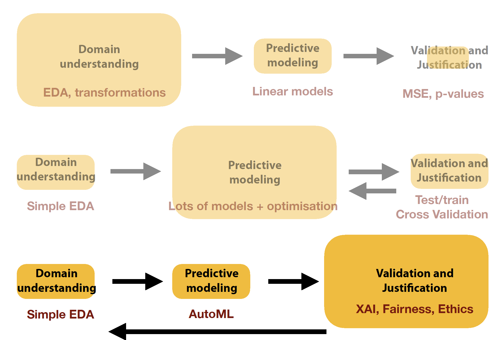

Optimize the predictive performance of a model on the test set.
Don’t test anything else.
Jump to another problem.
Responsible Machine Learning:
Select a problem.
Optimize the predictive performance of a model on the test set.
Verify that the model has not accidentally learned artifacts present in the data.
Verify that it is consistent with domain knowledge.
Monitor the model, because the future is usually different from the training data.
The purpose of this tutorial is to present techniques for model exploration, visualisation and explanation. To do this we will use some interesting real-world data, train a few models on the data and then use XAI (eXplainable artificial intelligence) techniques to explore these models.
What? 2/2
Materials for our workshop
Explanatory Model Analysis. Explore, Explain, and Examine Predictive Models. With examples in R and Python. https://ema.drwhy.ai/
The Hitchhiker’s Guide to Responsible Machine Learning. Shorter summary of EMA book. https://rml.mi2.ai/
The workshop consists of 1/3 lecture, 1/3 code examples discussed by the tutor and 1/3 computer-based exercises for participants.
It aims to present a set of methods for the exploration of complex predictive models. I assume that participants are familiar with Python and have some basic knowledge of predictive models. In this workshop, we will show how to explore these models.
Feel free to interrupt me and ask questions during the workshop!
To make working with models more enjoyable, the materials are based on a true story, which we will tell with the help of a comic strips.
The problem
The life cycle of a predictive model begins with a well-defined problem. In this example, we are looking for a model that assesses the risk of death after being diagnosed covid. We don’t want to guess who will survive and who won’t. We want to construct a score that allows us to sort patients by risk of death.
Why do we need such a model? It could have many applications! Those at higher risk of death could be given more protection, such as providing them with pulse oximeters or preferentially vaccinating them.
Who? - Let’s get to know each other! 1/2
Przemysław Biecek
works at Faculty of Mathematics, Informatics, and Mechanics at University of Warsaw and Faculty of Mathematics and Information Science at Warsaw University of Technology, Poland
for 20 years worked with teams of physicians helping them analyze data and build predictive models (often very simple)
research interests include Responsible Machine Learning and eXplainable Artificial Intelligence
(also) worked in R&D teams at large and small corporations such as Samsung, IBM, Netezza, Disney, iQuor
leads the work of the MI2.AI research team, which carries out XAI related research projects (looking for collaborators)
Who? - Let’s get to know each other! 2/2
Introduction to predictive modelling + EDA
Model Development Process 1/2
The model development is an iterative process. In each iteration, new versions of the model are created and then the models are evaluated, conclusions are drawn so as to move to the next iteration.

Model Development Process 2/2
Over time, the amount of resources spent on each step changes. In successive iterations, the validation of models becomes more important and exploring the data becomes less important.
Model Development Process in 10 steps
In this workshop we will go through the process of building a model in ten steps. We will build several candidate models so that they can be compared later using XAI techniques.
Step 0. Hello model!
SARS-COV-2 case study
To demonstrate what responsible predictive modelling looks like, we used data obtained in collaboration with the Polish Institute of Hygiene in modelling mortality after the Covid infection. We realize that data on Coronavirus disease can evoke negative feelings. However, it is a good example of how predictive modelling can directly impact our society and how data analysis allows us to deal with complex, important and topical problems.
All the results presented in this book can be independently reproduced using the snippets and instructions presented in this book. If you do not want to retype them, then all the examples, data, and codes can be found on the https://betaandbit.github.io/RML2/.
Figure 1: Mortality statistics as presented on the CDC website accessed on May 2021. This table shows rate ratios compared to the group 5- to 17-year-olds (selected as the reference group because it has accounted for the largest cumulative number of COVID-19 cases compared to other age groups).
Python snippets
In this book we follow the convention that a model is an object that has predict function, which transforms the \(n\times p\) input matrix with \(p\) variables for \(n\) observations into a vector of \(n\) predictions. Below, we define a class cdc_risk that calculates odds of Covid related death based on statistics from the CDC website.
Predictive models may have different structures. To work responsibly with a large number of models, a uniform standardized interface is needed. In this book, we use the abstraction implemented in the dalex package.
The Explainer constructor from this package creates an Explainer, i.e. a wrapper for the model that will allow you to work uniformly with objects of very different structures. The first argument is a model. It can be an object of any class but it is assumed that the objects contains the predict function as in our example. The label specifies a unique name that appear in the plots while other arguments will be introduced in next sections.
import dalex as dxexplainer_cdc = dx.Explainer(model_cdc, label="CDC")explainer_cdc.predict(steve)## array([0.00045])
Using the Explainer may seem like an unnecessary complication at the moment, but on the following pages, we show how it simplifies the work.
Step 1. Data Exploration (EDA)
To build a model, we need good data.
In Machine Learning, the word good means a large amount of representative data. Unfortunately, collecting representative data is neither easy nor cheap and often requires designing and conducting a specific experiment.
Here we use the data collected through epidemiological interviews. The number of interviewed patients is large, so we treat this data as representative, although unfortunately, this data only involves symptomatic patients who are tested positive for SARS-COV-2. Asymptomatic cases are more likely to be young adults.
The data is divided into two sets: covid_spring and covid_summer. The first set was acquired in spring 2020 and will be used as training data, while the second dataset was acquired in the summer and will be used for validation. In machine learning, model validation is performed on a separate data set called validation data. This controls the risk of overfitting an elastic model to the training data. If we do not have a separate set, then it is generated using cross-validation, out-of-sample, out-of-time or similar data splitting techniques.
Python snippet
All files needed to replicate the following code are available at website https://github.com/BetaAndBit/RML2. Download csv file with data and save them the working directory. Let’s start our analyses with reading data from these files.
Let’s use the package matplotlib to draw a simple histogram for Age variable, and statsmodels to draw a mosaic plot for Diabetes variable.
import matplotlib.pyplot as pltcovid_spring.pivot(columns="Death", values="Age").plot.hist(bins=30)plt.show()from statsmodels.graphics.mosaicplot import mosaicmosaic(covid_spring, ['Death', 'Diabetes'])plt.show()

Figure 2: Left panel: Histogram for the Age variable by survivor status. Right panel: The mosaic plot shows that there are significantly fewer people with diabetes, but among them the mortality is higher.
A handy way to summarise tabular data in groups is the so-called ,,Table 1’’. This is a summary of the main characteristics of each variable broken down into groups defined by the variable of interest (here, binary information about Covid death). The name stems from the fact that this summary of the data is usually the first table to be shown in many medical and related scientific journals.
One of the most important rules to remember when building a predictive model is: Do not condition on future!. I.e. do not use variables that are not defined at the time the prediction needs to be made. Note that in the discussed case variables Hospitalization, Fever or Cough are not good predictors because they are not known in advance before infection. In the following lines, we remove invalid variables from both data sets.
Data exploration and cleansing often consume most of the time spent on data analysis. Here we have only touched on exploration, but even this initial analysis helped to determine that Age is an important characteristic (we will confirm this later). We will build further models only on variables from the selected_vars vector.
Step 2. Model Performance
Measures
Note that in the Covid-mortality-risk-assessment problem, we are not interested in the binary prediction survived/dead, but rather in the quality of the ranking of risk scores. Relative risks can be used to do a triage, to determine which people need a response most quickly, such as a vaccine.
Figure 3: Classical measures of performance for classification tasks - from Wikipedia
For such types of problems, instead of a contingency table, one looks at Receiver Operating Characteristic (ROC) curve, which illustrates the trade-off between the true positive rate (sensitivity) and the false positive rate (1-specificity) at different classification thresholds. The curve’s shape and the area under it (AUC-ROC) provide insights into the classifier’s discrimination ability and overall predictive accuracy.
Figure 4: Distribution of scores for the Covid model and the corresponsind ROC curve
Python snippets
There are many measures for evaluating predictive models, and they are implemented in sklearn.metrics Python module. Below we will show the most common measures calculated by default by the dalex package.
First, we need an explainer with specified validation data (here covid_summer) and the corresponding response variable.
explainer_cdc = dx.Explainer( model = model_cdc, data = covid_summer.drop("Death", axis=1), y = covid_summer.Death, model_type ="classification", label ="cdc")
Model exploration starts with an assessment of how good is the model. The model_performance() function calculates a set of measures for a specified type of task, here classification.
Note: The explainer knows whether the model is trained for classification or regression task, so it automatically selects the right performance measures. This can be overridden if needed.
The plot function draws a graphical summary of the model performance. With the geom argument, one can determine the type of chart.
Figure 5: Left panel: ROC curve. Right panel: LIFT curve, one of the many graphical statistics used in summarizing the quality of scores, often used in credit risk scoring. The OX axis presents the fraction of assigned credits, and the OY axis presents the ratio of the Sensitivity of the tested model to the Sensitivity of the random model.
Step 3. Grow a tree
Classification And Regression Trees
There are hundreds of different methods for training machine learning models available to experienced data scientists. One of the oldest and most popular are tree-based algorithms, first introduced in the book Classification And Regression Trees and commonly called CART. Here is the general deescription for this class of algorithms.
Start with a single node (root) with a full dataset.
For a current node, find a candidate split for the data in this node. To do this, consider every possible variable, and for each variable, consider every possible cutoff (for a continuous variable) or a subset of levels (for a categorical variable). Select the split that maximizes the measure of separation (see below).
Check a stopping criteria like the minimum gain in node purity or depth of a tree. If the stopping criteria are met, then (obviously) stop. Otherwise, partition the current node into two child nodes and go to step 2 for each child node separately.
Python snippets
The most common way to train a decision tree in Python is by using the DecisionTreeClassifier class from sklearn.tree module. Scikit-learn provides a robust and user-friendly implementation of decision tree algorithms. The training process typically involves two steps: (1) create an instance of the decision tree classifier specifying any desired hyperparameters like tree’s depth, splitting criteria, and other aspects of the learning process, (2) train the decision tree model to the training data using the fit method.
from sklearn import treemodel_dtc = tree.DecisionTreeClassifier(max_depth=3, ccp_alpha=0.0001, random_state=0)model_dtc.fit(covid_spring.drop("Death", axis=1), covid_spring.Death)
Trained model can be plotted with the plot_tree method.
Figure 6: The first split in the tree is for the Age variable. Patients are divided into younger than 67 (left) and older than 67 (right). In the same manner, one can read other splits. The criteria adopted resulted in a tree with seven leaves. The leaves include information about the number of patients who reached that leaf and the proportion of each class.
In order to use dalex pipeline we need to turn the model into the Explainer.
As before, we can calculate the performance of the model with the method model_performance. Here on the test data the performance is lower than for the previous model.
Let’s add the AUC curve for the decision tree, to the curve obtained from the previous model.
performance_cdc.plot(performance_dtc, geom="roc")
Figure 7: ROC curves for the CDC and tree model.
Step 4. Plant a forest
Random forest
In 2001, Leo Breiman proposed a new family of models, called random forests, which aggregate decisions from an ensemble of trees trained on bootstrap samples.
Random forests combine two interesting concepts. First, combining multiple weaker models produces a stronger and more stable model. Second, the more diverse the individual models, the greater the benefit of averaging them. To increase the diversity of models, Breiman used the bootstrap technique. Bootstrap is today a very widespread and powerful statistical procedure.
Figure 8: The key steps are: to generate a set of B bootstrap copies of the dataset by sampling rows with replacement. Deep trees are trained for each copy. During the prediction, the results of the individual trees are aggregated.
Python snippets
The most common way to train a decision tree in Python is by using the RandomForestClassifier class from sklearn.ensemble module. Scikit-learn provides a straightforward implementation of Random Forest algorithms. As with other Scikit-learn models the training process typically involves two steps: (1) create an instance of the classifier specifying any desired hyperparameters like number of trees, (2) train the model to the training data using the fit method.
from sklearn.ensemble import RandomForestClassifiermodel_rfc = RandomForestClassifier(n_estimators=100, random_state=0)model_rfc.fit(covid_spring.drop('Death', axis=1), covid_spring.Death)
A trained model can be turned into a dalex explainer. Note that we set the label argument to control name of the model presented in diagnostic plots.
Figure 9: ROC curves for the CDC, tree and ranger model.
Step 5. Hyperparameter Optimisation
Tuning
Machine Learning algorithms typically have many hyperparameters that specify a model training process. For some model families, like Support Vector Machines (SVM) or Gradient Boosting Machines (GBM), the selection of such hyperparameters has a strong impact on the performance of the final model. The process of finding good hyperparameters is commonly called tuning.
Different model families have different sets of hyperparameters. We don’t always want to optimize all of them simultaneously, so the first step is to define the hyperparameter search space. Once it is specified, then tuning is based on a looped two steps: (1) select a set of hyperparameters and (2) evaluate how good this set of hyperparameters is. These steps are repeated until some stopping criterion is met, such as the maximum number of iterations, desired minimum model performance, or some increase in model performance.
Figure 10: The hyperparameter optimization scheme implemented in the mlr3tuning package. Source: https://mlr3book.mlr-org.com/tuning.html
Python snippets
The most common way to perform a hyperparameter optimisation in Python is by using the RandomizedSearchCV class from module sklearn.model_selection.
First, we need to specify the space of hyperparameters to search. Not all hyperparameters are worth optimizing. Let’s focus on three for the random forest algorithm: number of trees, max depth of a tree and the spliting critera.
For automatic hyperparameter search, it is necessary to specify: (1) search strategy (below it is the random search), (2) family of models to be tested, (3) definition of space for hyperparameters, (4) a procedure to evaluate the performance of the proposed models (below it is the AUC determined by 5-fold cross-validation), (5) a stopping criterion (below it is 10 evaluations).
Now we are ready to fit parameters in this pipeline. As usual in can be done with fit() method. After the tuning the best identified hyperparameters cna be extracted from the best_params_ field.
There is, of course, no guarantee that the tuner will find better hyperparameters than the default ones. But in this example, the tuned model is better than all other models that we have considered so far. Let’s see how much. We need a dalex wrapper.
Figure 11: ROC curves for the CDC, tree, ranger model and auto tune ranger model.
Step 6. Variable-importance
Do we need a new measure for Variable Importance?
Some models have built-in methods for the assessment of Variable importance. For linear models, one can use standardized model coefficients or p-values. For random forest one can use out-of-bag classification error. For tree boosting models, one can use gain statistics.
Several common approaches for variable selection, or for describing relationships between variables, do not necessarily capture a variable’s importance. Null hypothesis testing methods may identify a relationship, but do not describe the relationship’s strength. Similarly, checking whether a variable is included by a sparse model-fitting algorithm, such as the Lasso (Hastie et al., 2009), does not describe the extent to which the variable is relied on. Partial dependence plots (Breiman et al., 2001; Hastie et al., 2009) can be difficult to interpret if multiple variables are of interest, or if the prediction model contains interaction effects .
Another common VI procedure is to run a model-fitting algorithm twice, first on all of the data, and then again after removing X1 from the data set. The losses for the two resulting models are then compared to determine the importance, or “necessity,” of X1 (Gevrey et al., 2003). Because this measure is a function of two prediction models rather than one, it does not measure how much either individual model relies on X1.
Which variables are important?
Some models have built-in methods for the assessment of variable importance. For example, for linear models, one can use standardized model coefficients or p-values. For the random forest, one can use out-of-bag classification error. For tree boosting models, one can use information gain statistics. Yet, the problem with such model-specific techniques is that they cannot be compared between models of different structures. For this and a few other reasons, it is convenient to use model agnostic techniques, such as permutational importance of variables.
The procedure is based on perturbations of a selected variable or group of variables. The intuition is that if a variable is important in a model, then after its random perturbation the model predictions should be less accurate.
The permutation-based variable-importance of a variable \(i\) is the difference (or ratio) between the model performance for the original data and the model performance calculated on data with the permuted variable \(i\). More formally
\[
VI(i) = L(f, X^{perm(i)}, y) - L(f, X, y),
\]
where \(L(f, X, y)\) is the value of loss function or performance measure for the data \(X\), true labels \(y\) and model \(f\), while \(X^{perm(i)}\) is dataset \(x\) with \(i\)-th variable permuted.
Python snippets
We use the model_parts method from the dalex package to calculate the importance of variables. The only required argument is the model to be analyzed. With additional arguments, one can also specify how the importance of variables is to be calculated, whether as a difference, ratio or without normalization.
This technique is handy when we want to compare the importance of variables in different models. Let’s see what it looks like in our example. The plot method works for any number of models given as consecutive arguments.
Figure 12: The importance of variables can be compared between various models, and it is usually a source of valuable information. In this plot, each bar starts at 1-AUC for the model on the original data and ends at 1-average AUC calculated on the data with the indicated variable permuted.
For the CDC model, the only important variable is Age. For the tree model, the three important variables are Age, Cancer, and Cardiovascular diseases, an observation consistent with Figure 6. For the ranger model and the model after tuning of hyperparameters, more variables are taken into account. However, Age is indisputably the most important variable in all models.
The same perturbation technique can be used to analyze the importance of groups of variables. Just use the variable_groups argument. Grouping variables can be particularly useful if the number of variables is large and groups of variables describe some common aspects. In our case we could group all diseases together.
Your turn
In jupiter, reproduce the results from the presentation for the covid data
Apply discussed techniques for the Titanic data (see EMA)
import dalex as dx
titanic = dx.datasets.load_titanic()
X = titanic.drop(columns='survived')
y = titanic.survived
Introduction to XAI

Step 7. Partial Dependence and Accumulated Local Effects
Partial Dependence
Once we know which variables are important, it is usually interesting to determine the relationship between a particular variable and the model prediction. Popular techniques for this type of Explanatory Model Analysis are Partial Dependence (PD) and Accumulated Local Effects (ALE).
PD profiles were initially proposed in 2001 for gradient boosting models but can be used in a model agnostic fashion. This method is based on analysis of average model response after replacing variable \(i\) with the value of \(t\).
More formally, Partial Dependence profile for variable \(i\) is a function of \(t\) defined as
We use the model_profile method from the dalex package to calculate the variable profile. The only required argument is the model to be analyzed. It is a good idea to specify names of variables for profile estimation as a second argument; otherwise, profiles are calculated for all variables, which can take some time. One can also specify the exact grid of values for calculations of profiles.
The average is calculated for the distribution specified in the data argument in the explainer. Here we calculate the PD profiles for the Age variable for covid_summer data.
Figure 14: Each colour indicates a different model. The CDC model has a shifted sharp increase in risk of death. Models based on covid_spring data are more likely to place the dramatic increase in the risk around age 65. The tree model is too shallow to capture the ever-increasing risk in the oldest group. Despite this, the models are quite consistent about the general shape of the relationship.
Grouped Partial Dependence profiles
By default, the average is calculated for all observations. But with the argument one can specify a grouping variable. PD profiles are calculated independently for each level of this variable.
where \(\Pi\) is a set of all possible permutations of players \(P\) while \(S_j^\pi\) is a set of players that are before player \(j\) in permutation \(\pi\).
Instead of trying all \(\Pi\) permutations one can use only \(B\) random permutations to estimate \(\phi_j\)
For tabular data, one of the most commonly used techniques for local variable attribution is Shapley values. The key idea behind this method is to analyze the sequence of conditional expected values. This way, we can trace how the conditional mean moves from the average model response to the model prediction for observation of interest \(x^*\). Let’s consider a sequence of expected values.
By looking at consecutive differences \(\mu_{x_1}-\mu\), \(\mu_{x_1,x_2}-\mu_{x_1}\) and so on, one can calculate the added effects of individual variables, see an example in Figure 16. It sounds like a straightforward solution; however, there are two issues with this approach.
One is that it is not easy to estimate the conditional expected value. In most implementations, it is assumed that features are independent, and then we can estimate \(\mu_{K}\) as an average model response with variables in the set \(K\) replaced by corresponding values from observation \(x^*\). So the crude estimate would be
\[
\widehat{\mu}_{K} = \frac 1n \sum_{i=1}^n f(x_1^o, x_2^o, ..., x_p^o),\text{ where }\left\{ {{x_j^o = x_j^*,\text{ if }j \in K} \atop {x_j^o = x_j^i,\text{ if }j \not\in K.} } \right.
\]
The second issue is that these effects may depend on the order of conditioning. How to solve this problem? The Shapley values method calculates attributions as an average of all (or at least a large number of random) orderings, while the Break-down method uses a single ordering determined with a greedy heuristic that prefers variables with the largest attribution at the beginning.
Figure 16: The following rows show the conditional distributions (vioplots) and the conditional expected value (red dot). The grey lines between the rows show how the predictions for each observation change after replacing the next variable with the value from observation \(x^*\). Analyzing such a sequence of conditionings, we can read which variables significantly explain the differences between the mean model response (the first row) and the observed model response (the last row).
Break down
SHAP vs Break-down
Consecutive conditioning may depend on the order of variables.
The Shapley values method calculates attributions as an average of all (or at least a large number of random) orderings,
while the Break-down method uses a single ordering determined with a greedy heuristic that prefers variables with the largest attribution at the beginning.
Python snippets
Let’s define an observation for which we will examine the model more closely. Let it be a 76-year-old man with hypertension. We show a local model analysis using model_ranger as an example.
The predict_parts function for a specified model and a specified observation calculates local variable attributions. The optional argument order forces use of a specified sequence of variables. If not specified, then a greedy heuristic is used to start conditioning with the most relevant variables.
Figure 17: Break-down contributions of each variable to the final model response.
The alternative is to average over all (or at least many random) orderings of variables. This is how the Shapley values are calculated. The show_boxplots argument highlights the stability of the estimated attributions between different orderings.
shap_steve.plot(show=False)

Figure 18: Shapley values contributions to the final model prediction.
From local to global – Feature importance
The SHAP method gives local explanations, i.e. explanations for each single observation. But we can convert them to global explanations by aggregating the explanations for individual observations.
For example, we can assess the validity of a variable by counting the average modulus of SHAP explanations.
Such a measure of the importance of variables does not depend on the model structure and can be used to compare models.
Below is an example for the model trained for Titanic data
From local to global – Summary plot
One of the most useful statistics is a plot summarizing the distribution of Shapley values for the data for each variable.
On the OX axis are presented the Shapley values, in the rows are the variables. The color indicates whether an observation had a high or low value in that variable.
From the graph you can read which variables are important (they have a large spread of points)
You can read what is the relationship between the variable and the Shapley value, whether the color has a monotonic gradation or there are some dependencies
You can read the distribution of Shapley values

From local to global – Dependence plot
If we plot the Shapley values as functions of the value of the original variable, it is possible to see what kind of relationship exists between this variable and the average result.
This type of plots allows you to choose the transformations of the variable, and better understand the relationship between this variable and the result of the model
We can additionally color the graph depending on one more variable (in the example below, it is gender) to see if an interaction is present in the model. In this case, the attributes of the model will depend on the value of this additional variable.
Step 9. Ceteris Paribus
Other things being equal
Ceteris Paribus (CP) is a Latin phrase for “other things being equal”. It is also a very useful technique for an analysis of model behaviour for a single observation. CP profiles, sometimes called Individual Conditional Expectations (ICE), show how the model response would change for a selected observation if a value for one variable was changed while leaving the other variables unchanged.
While local variable attribution is a convenient technique for answering the question of which variables affect the prediction, the local profile analysis is a good technique for answering the question of how the model response depends on a particular variable. Or answering the question of what if…
Partial Dependence - intutition
As with other explanations, we can aggregate local explanations to get a global view of how the model works.
Let’s average Ceteris Paribus profiles.
Partial Dependence in action (again)
Once we know which variables are important, it is usually interesting to determine the relationship between a particular variable and the model prediction. Popular techniques for this type of Explanatory Model Analysis are Partial Dependence (PD) and Accumulated Local Effects (ALE).
The estimation is based on the average of the CP profiles.
The computational complexity is \(N \times Z\) model evaluations, where \(N\) is the number of observations and \(Z\) is the number of points at which the CP profile is calculated (how to select these points?).
Replacing \(i\)-th variable by value \(t\) can lead to very strange observations, especially when \(i\)-th variable is correlated with other variables and we ignore the correlation structure. One solution to this are Accumulated Local Effects profiles, which average over the conditional distribution.
The predict_profiles() function calculates Ceteris Paribus profiles for a selected model and selected observations. By default, it calculates profiles for all variables, but one can limit this list with the variables vector of variables.
The calculated profiles can be drawn with the generic plot function. As with other explanations in the DALEX library, multiple models can be plotted on a single graph. Although for technical reasons quantitative and qualitative variables cannot be shown in a single chart. So if you want to show the importance of quality variables, you need to plot them separately.
Figure below shows an example of a CP profile for continuous variable Age and categorical variable Cardiovascular.Diseases.
cp_steve.plot(variables="Age", show=False)
Figure 19: The dot shows the observation under analysis. CP profile shows how the model predictions change for changes in the selected variable. On the left is the CP profile for the continuous variable Age, on the right for the categorical variable Cardiovascular.Diseases. For categorical variables, one can specify how the CP profiles should be drawn by setting the categorical_type argument.
The plot function can combine multiple models, making it easier to see similarities and differences.
We have made the model built for Covid data, along with the explanations described in this book, available at webpage. After two months, tens of thousands of people used it. With proper tools the deployment of such a model is not difficult.
To obtain a safe and effective model, it is necessary to perform a detailed Explanatory Model Analysis. However, we often don’t have much time for it. That is why tools that facilitate fast and automated model exploration are so useful.
One of such tools is arena. It is a package that transforms an explainer into an HTML page with javascript based interaction. Such an HTML page is easy to save on a disk or share by email. The webpage has various explanations pre-calculated, so its generation may be time-consuming, but the model exploration is very fast, and the feedback loop is tight.
Generating a arena dashboard for an explainer is easy More info
In jupiter, reproduce the results from the presentation for the covid data
Apply discussed techniques for the Titanic data (see EMA)
import dalex as dx
titanic = dx.datasets.load_titanic()
X = titanic.drop(columns='survived')
y = titanic.survived
Take away
Shift in our focus: Statistics
Statistical analysis of data most often assumes a great deal of knowledge about the phenomenon. Understanding the data allows to choose appropriate transformations, representations. Verification is oriented toward hypothesis testing, such as by p-values

Shift in our focus: Machine Learning
Machine learning puts a priority on optimizing the model, especially for performance. There is a lot of searching through the space of possible solutions here to find the best one
Knowledge of the phenomenon is no longer so important
Shift in our focus: Human Oriented ML?
What’s next. If model building can be easily and quickly automated, in-depth model verification will become more important
This is where models are created seamlessly according to the needs of the user, and the user can focus on decisions supported by the models

Take-home message
Why interpretability is important?
Higher trust -> higher adoption of ML solutions that will support decision making process
May be required by auditors, regulators, law
New tool for model exploration -> to gain new insights about the data/nature of some phenomenon
Gate keeping role, human can control and/or block wrong decisions when knowing key reasons behind these decisions
Debugg/improve data or models, identify wrong behavior and help to plan actions to fix it
Deeper diagnostic of models, validation against some domain knowledge, expectations or other values (like human rights -> fairness)